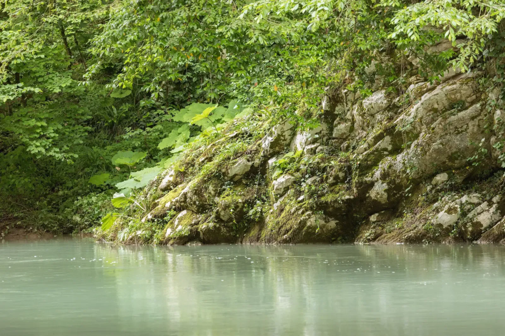
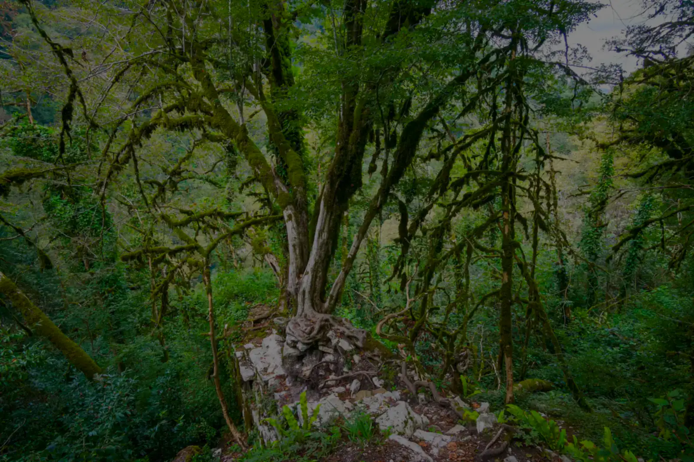
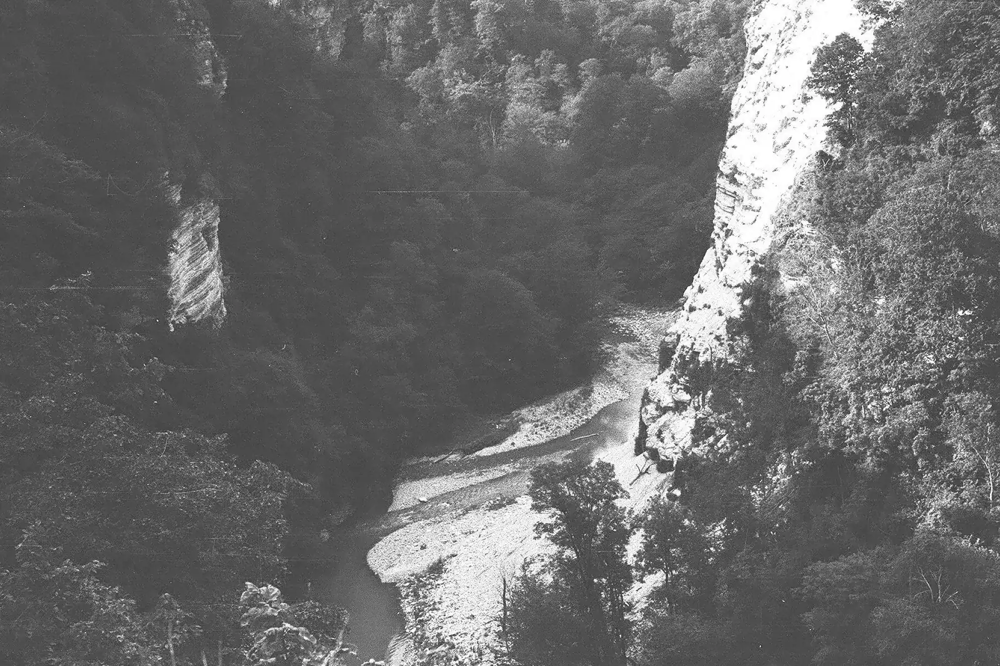
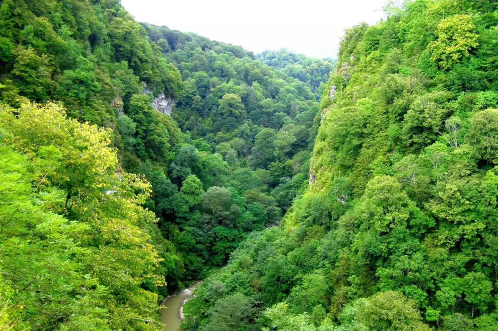

Река Хоста под скалой, внутри рощи
Фото: Andy One, 2021, CC BY-SA 2.0
Глава восьмая
1931
Тисо-самшитовая роща
Реликтовый лес берегли с 1931 года, а погубила его бабочка, завезённая с саженцами для Олимпиады.
Хостинский отдел Кавказского заповедника
Что это
Лес, который старше человечества
Тисо-самшитовая роща — субтропический лес в ущелье реки Хосты, на склоне горы Ахун, в двух с половиной километрах от моря. Здесь растут тис и колхидский самшит: деревья-, дожившие со времён, когда на Земле было теплее и влажнее.
Роща входит в Кавказский . На её северной границе, на скале над рекой, стоят развалины древней каменной крепости.
- Где
- Ущелье Хосты, восточный склон Ахуна
- Площадь
- Около 300 гектаров
- Охраняется
- С 1931 года
- Входит в
- Кавказский заповедник, с 1999 года — объект ЮНЕСКО «Западный Кавказ»
- Деревья
- Тис ягодный и самшит колхидский
- Тропы
- Большое кольцо, 5 км; Малое кольцо, 1,6 км; «В глубь веков», 800 м



- Каждый огонь — одна популяция самшитаДанные WWF. Расположение точек и порядок, в котором они гаснут, условны: это схема, не карта
- 22 сентября 2012 годаВ питомнике, где держали саженцы самшита из Италии для Олимпийской деревни, нашли гусениц самшитовой огнёвки
- 2013. Бабочка расходится по Большому СочиК концу года она уже в самшитниках национального парка
- Лето 2014. Погибла Хостинская рощаЛичинки поразили 99 % самшита, не меньше 70 % самшитников рощи погибли (Кавказский заповедник). К середине августа бабочка почти во всех долинах побережья края
- 2015. Адыгея и АбхазияВ июле огнёвку находят в Адыгее, на реке Цице и в Майкопе; в Абхазии массово гибнет самшит
- Конец 2016. Уцелели лишь отдельные группы в долине ШахеСамшитники в России: было около 5 тысяч гектаров, осталось около 5
- Ущелье Хосты, 1960 годТак выглядел лес, пока в нём жил самшит. Л. А. Кудельский, PastVu № 507101
- То же ущелье в 2008 годуТочки съёмки разные, кадры не совмещены. Фото: Bansoft, CC BY-SA 3.0
Схема по данным WWF («Наука и жизнь», 2017, № 10), Википедии и «Коммерсанта». Фон: дерево на руинах крепости, N 3 14 15 92 65, 2021, CC BY-SA 4.0, затемнён
Рощу охраняли с 1931 года от топора и от людей. От бабочки, приехавшей с саженцами, охрана не спасла.
Как это появилось
Миллионы лет и четыре года
18–20 млн лет
Роща хранит растительность, почти не изменившуюся с третичного периода. Самшит растёт очень медленно, а его древесина такая плотная, что тонет в воде: его зовут «железным деревом». В конце XIX века самшит вырубали ради ценной древесины, в начале XX века вывозили в Турцию и другие страны.
1931
Рощу объявили заповедной, она стала субтропическим Хостинским отделом Кавказского заповедника. Сам заповедник основан в 1924 году на землях бывшей Великокняжеской Кубанской охоты, сначала ради спасения зубра. В 1999 году Кавказский заповедник вошёл в .
IV или XIII–XV век
На северной границе рощи стоит Хостинская крепость: остатки четырёх башен и стен из известняка. Кто и когда её построил, неизвестно. В реестре памятников её относят к IV веку, по другой версии её построили по приказу византийского императора Ираклия в 624 году, по третьей это генуэзская фактория XIII–XV веков. Ни одна версия не доказана.
22 сентября 2012
В питомнике, где хранили саженцы самшита из Италии для озеленения олимпийской деревни, нашли гусениц самшитовой огнёвки — бабочки родом из Восточной Азии. Это . По сообщению «Коммерсанта», акт о находке предписывал сжечь посадочный материал, но саженцы обработали инсектицидом и высадили.
2013–2014
Остановить огнёвку не удалось. Закон запрещает истребительные меры в заповедниках и национальных парках, а в водоохранных зонах нельзя распылять химию. Ведомства спорили, кто отвечает. Закон о приняли только в 2014 году, когда бабочка уже была повсюду. Летом 2014 года погибла Хостинская роща.
2016–2019
К концу 2016 года площадь колхидского самшита в России сократилась, по Википедии, с 5 тысяч до 5 гектаров. К 2019 году самшит в роще погиб полностью (по данным 2019 года; состояние сегодня мы не проверяли). Учёный Юрий Гниненко считает, что восстанавливать самшитники придётся, возможно, 500 лет.
Газета, 21 августа 2017
«Россия столкнулась с масштабной экологической катастрофой: в Краснодарском крае и Адыгее погибли реликтовые самшитовые леса. Вид, переживший ледниковый период, почти полностью уничтожен бабочкой огнёвкой — вредителем, занесенным в растениях, которые были закуплены в 2012 году в Италии для сочинской Олимпиады».
- Заповедник, 2014
- «Личинки насекомых в короткий срок распространились на 99 % насаждений самшита, уничтожили листву; не менее 70 % уникальных самшитников рощи можно считать погибшими». Цитата по той же статье.
- Как читать
- Газета пишет через пять лет после находки: это уже итог. Цифры о гибели дают сам заповедник и WWF, газета их пересказывает.
2017
«Вид, переживший ледниковый период, почти полностью уничтожен бабочкой огнёвкой…»
«Коммерсантъ», 21 августа 2017 года
Роща и крепость
Что осталось в ущелье
На что посмотреть
Пять примет рощи
Мёртвое дерево выглядит зелёным
Погибший самшит покрывается мхом и издали кажется живым (так подписаны снимки рощи в «Науке и жизни»). Ветки мёртвого дерева легко ломаются, хотя самшит считают «железным».
Тис: хвоя и красные «ягоды»
У тиса вместо шишек красные мясистые шишкоягоды, а древесина красноватая, поэтому его называют «красным деревом». Самые крупные тисы в роще, по Википедии, достигают 30 метров.
Каменный лабиринт
Около 20 миллионов лет назад при поднятии Ахунского массива пласт известняка сдвинулся вдоль трещин. Теперь тропа идёт узкими проходами между высокими слоистыми стенами.
Бирюзовая река
По роще течёт Хоста. Над ней стоят отвесные скалы высотой около 100 метров (так описывает заповедник), поэтому крепость над рекой почти неприступна с трёх сторон.
Крепость: смотреть с тропы
Развалины стоят в труднодоступной части рощи, по дороге к ним стоят таблички с запретом прохода. Смотреть на них лучше в составе экскурсии.
Значение для Сочи
Субтропический лес внутри города: его охраняют с 1931 года, и это одно из самых доступных мест, где можно увидеть заповедную природу.
Значение для России
Природное наследие и цена ошибки: заповедный лес, который охраняли с 1931 года, погубил вредитель, завезённый с саженцами для Олимпиады.
Разделы курса: 1. Что такое Россия, 5. Вызовы будущего и развитие страны
Ценность: любовь и ответственность

Факт, который мало кто знает
Этой открытке больше 70 лет. Колхидский самшит растёт так медленно, что за 70 лет вырастает всего на два-три метра. В погибшей роще были деревья выше десяти метров: чтобы вырастить такие снова, по оценке учёного, нужно около 500 лет.
Открытка «Хоста. Тиссо-самшитовый заповедник», 1954: так тогда писали название. PastVu № 197713
Что вы узнали
Три вещи о роще
Охрана — не гарантия
Рощу объявили заповедной в 1931 году и берегли почти восемьдесят лет, но в 2012–2014 годах её погубил завезённый вредитель.
Чужой вид приходит с торговлей
Огнёвка попала в Россию с саженцами из Италии. Акт о находке требовал сжечь саженцы, но их высадили, а закон запрещал обрабатывать заповедные леса химией.
Потерю не вернуть за одну жизнь
Самшит растёт так медленно, что погибшие самшитники, по оценке учёного, восстановятся лишь за сотни лет.
Проверьте себя Почему огнёвку не уничтожили химией сразу, когда она появилась в лесах?
В заповедниках и национальных парках закон запрещает истребительные меры, а в водоохранных зонах нельзя распылять химию. Закон о карантине растений приняли только в 2014 году.
Источники главы Статьи, данные и авторы снимков
- А. Демидова, Г. Ерёмкин. Сжигающая без огня // «Наука и жизнь», 2017, № 10: данные WWF о 1528 популяциях в 22 бассейнах, хронология 2012–2016.
- Отговорила роща на Кавказе // «Коммерсантъ», 21.08.2017: акт о находке, цифры заповедника, закон о карантине, оценка Ю. Гниненко.
- Тисо-самшитовая роща. Кавказский заповедник.
- Википедия: Тисо-самшитовая роща, Огнёвка самшитовая (дата находки, 22.09.2012), Самшит колхидский (5 тысяч и 5 гектаров), Хоста (крепость), Кавказский заповедник.
- Архивные снимки PastVu: № 507101, № 425597, № 197713; воспроизведены как учебная цитата.
- Современные снимки (Викисклад): Andy One, 2021, CC BY-SA 2.0; Bansoft, 2008, CC BY-SA 3.0; JuliaBesedina, 2015, Kuleshov Sergey, 2015, Stolbovsky, 2020, Leksaleksa, 2015, N 3 14 15 92 65, 2021, — CC BY-SA 4.0.